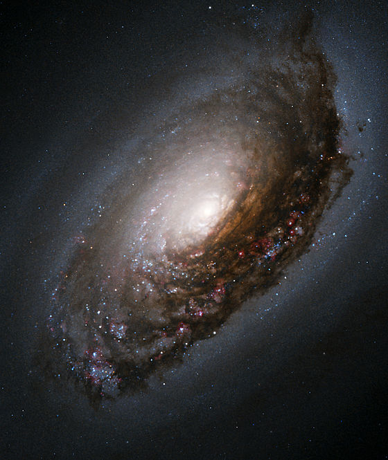

Guia das galáxias

Olho Negro
Descrição
A galáxia do Olho Negro (Messier 64, NGC 4826) é uma galáxia espiral localizada a aproximadamente dezessete milhões de anos-luz (cerca de 5,2 megaparsecs) de distância na direção da constelação da Cabeleira de Berenice.
Dados Interessantes
- A galáxia NGC 4826 é também conhecida como Galáxia do Olho Negro devido a sua extraordinária aparência escura com numerosos pontos brilhantes
- A característica mais estranha e peculiar observada nesta galáxia diz respeito aos seus movimentos internos,
- enquanto os braços externos movem-se em uma direção, a parte interna move-se para outra direção, este fato é de difícil explicação, mas os cientistas acreditam na hipótese de que a galáxia NGC 4826 seja o resultado da colisão entre duas galáxias, uma grande e uma pequena.